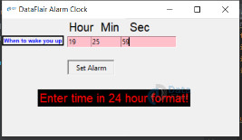

What is Python used for
Contents
What is Python used for#
Note
The content of this notebook are retrieved from the online community. Refer to the specific links for refernece.
In this notebook, I would like to explore different practical reason of learning python.
python can be used for#
AI and Machine Learning
Data Analytic
Data Visualization
Programming Applications
Web Development
Game Development
Finance
SEO
Design
For beginner, Future Learn suggested to start with some simple project such as the following:
build a guessing game
design a text-based adventure game
create a simple python calculator
write a simple, interactive quiz
build an alarm clock
Python’s Practical Application - Alarm Clock#
To dive a little deeper, I look into how to use python to create an alarm clock, and here is what I found on Data Flair. website
Step 1: Import all the necessary libraries and modules#
#Importing all the necessary libraries to form the alarm clock:
from tkinter import *
import datetime
import time
import winsound
Step 2: create a while loop#
# create the function
def alarm(set_alarm_timer):
while True:
time.sleep(1)
current_time = datetime.datetime.now()
now = current_time.strftime("%H:%M:%S")
date = current_time.strftime("%d/%m/%Y")
print("The Set Date is:",date)
print(now)
if now == set_alarm_timer:
print("Time to Wake up")
winsound.PlaySound("sound.wav",winsound.SND_ASYNC)
break
def actual_time():
set_alarm_timer = f"{hour.get()}:{min.get()}:{sec.get()}"
alarm(set_alarm_timer)
Step 3: creating GUI using tkinter#
clock = Tk()
clock.title("DataFlair Alarm Clock")
clock.geometry("400x200")
time_format=Label(clock, text= "Enter time in 24 hour format!", fg="red",bg="black",font="Arial").place(x=60,y=120)
addTime = Label(clock,text = "Hour Min Sec",font=60).place(x = 110)
setYourAlarm = Label(clock,text = "When to wake you up",fg="blue",relief = "solid",font=("Helevetica",7,"bold")).place(x=0, y=29)
# The Variables we require to set the alarm(initialization):
hour = StringVar()
min = StringVar()
sec = StringVar()
#Time required to set the alarm clock:
hourTime= Entry(clock,textvariable = hour,bg = "pink",width = 15).place(x=110,y=30)
minTime= Entry(clock,textvariable = min,bg = "pink",width = 15).place(x=150,y=30)
secTime = Entry(clock,textvariable = sec,bg = "pink",width = 15).place(x=200,y=30)
#To take the time input by user:
submit = Button(clock,text = "Set Alarm",fg="red",width = 10,command = actual_time).place(x =110,y=70)
clock.mainloop()
#Execution of the window.
Step 4: save the source code and run the file#
python3 DataFlair-Alarm-Clock.py
From this website, the project will look like this after the code is completed, which is pretty cool!

⚠Note Image retrieved from online source Data Flair
{kind=link}
Why python?#
I’ll continue to explore the different use of python. From this blog post on coursera, python is popular because of the following reasons:
It’s simple syntax that is similar to natural language. It makes the language easier to read and understand for beginner to start building project
It’s versatile and can be used for different types of projects from web development to machine learning
It’s beginner friendly
It’s open source which means it’s free to use and distribute
pythonarchive of module and libraries have bundles of code that third party users created to expand its usability and capabilitiespythonhas a huge and active community that contribute to it’s pool of modules, library, and tools to help other programmers - it means that finding a solution for specific issue/challenges is fairly simple
python for Math?#
My initial understanding of python is just for math calculation. From this page on Real Python, it provides some context for Python Math calculation.
For example, math module is a python package so you don’t have to install separately. Use the following code to install the package.
import math
And you can start to use it for calculation. Such as accessing the pi. Pi (π) is the ratio of a circle’s circumference (c) to its diameter (d):
\(pi = c/d\)
This ratio is always the same for any circle.
You can access pi as follows:
math.pi
Another usage is for finding Factorials with python factorial()
You may have seen mathematical expressions like 7! or 4! before. The exclamation marks don’t mean that the numbers are excited. Rather, “!” is the factorial symbol. Factorials are used in finding permutations or combinations. You can determine the factorial of a number by multiplying all whole numbers from the chosen number down to 1.
For example Symbol 4! means
\(4\times 3\times 2\times 1\)
I can use the following python code to create a for loop to solve this math problem.
def fact_recursion(num):
if num < 0:
return 0
if num == 0:
return 1
return num * fact_recursion(num - 1)
These are some interesting background knowledge for me to start learning python. I hope to continue to document my learning journey using this Jupyterbook.
Thanks for passing by!